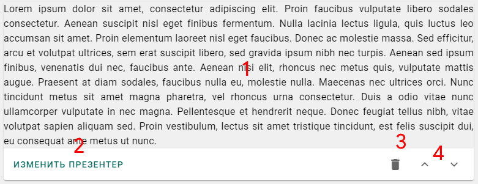
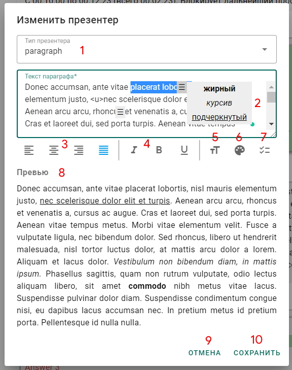
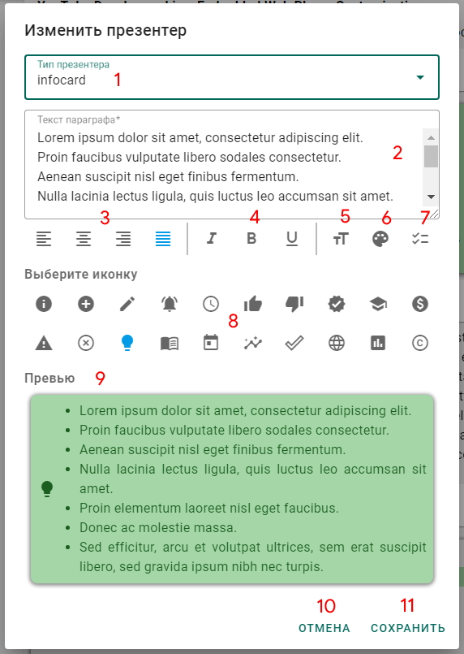
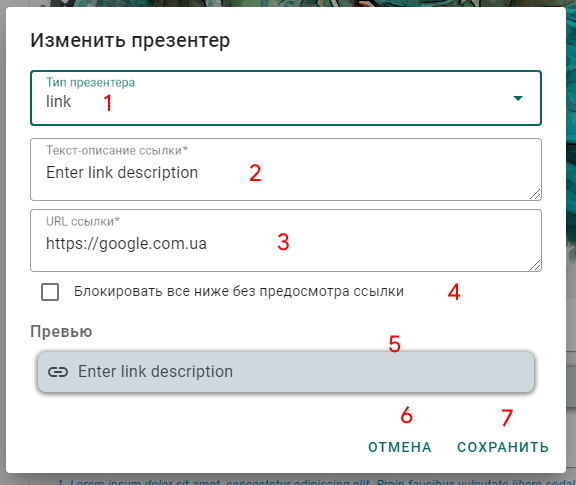
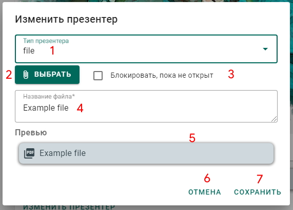
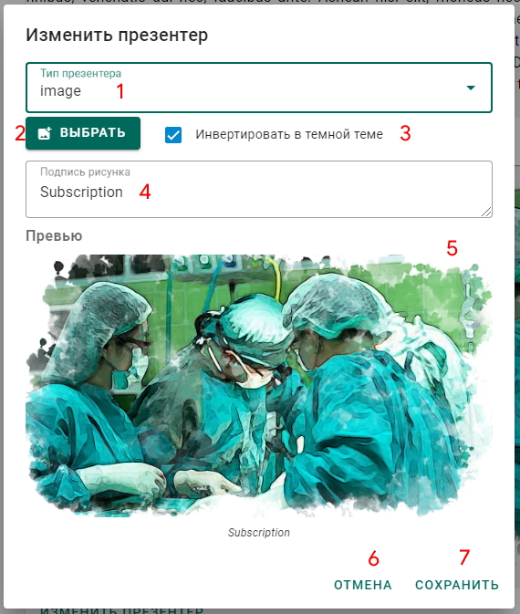
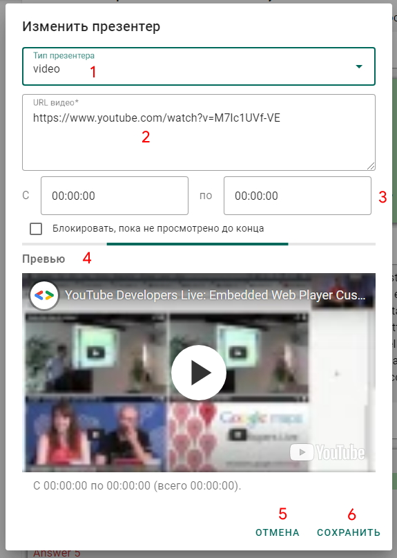
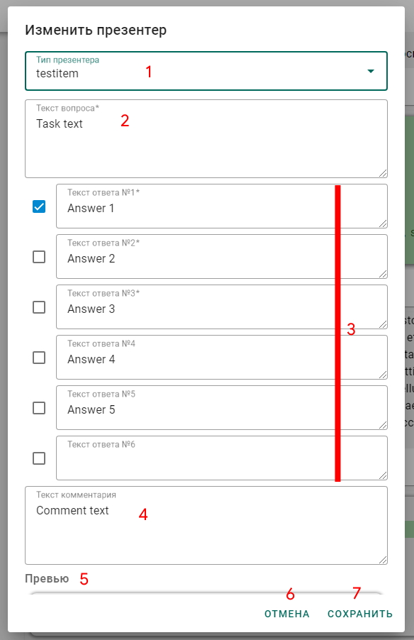
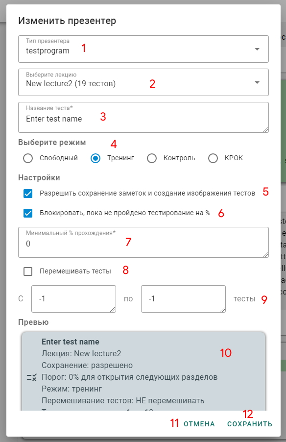

|
Общие сведения о презентерах
Презентер - единица отображения информации во всех ее видах в лекции на Android или на странице сайта
Существуют следующие презентеры
- Параграф - отображает форматированный текст
- Инфокарточка - отображает форматированный текст на карточке определенного цвета со смысловой иконкой перед текстом
- Изображение - отображает изображение любого формата во всю ширину контейнера
- Файл - отображает форматированную ссылку на файл формата .pdf с его названием и иконкой
- Ссылка - отображает форматированную ссылку на вебстраницу с ее названием и иконкой
- Тест-пример - отображает тест в виде карточки с вопросом, подсвеченными ответами и комментарием
- Тестпрограмма - отображает карточку для запуска тестирования и настройки тестов. НЕ РАБОТАЕТ НА САЙТЕ!
- Видео - отображает встренное видео из YouTube, с настроенными точками начала и конца
|
|
Принципы создания и настройки презентеров
|
|  |
Карточка презентера на странице редактирования
- Контейнер с предосмотром презентера (соответсвует и отображению на сайте и отображению в лекции на Android)
- Кнопка для изменений это презентера. По ее нажатию откроется диалог изменения перзентера, описанный по пунктам ниже
- Кнопка удаления перезентера со страницы
- Кнопки перемещения презентера вверх и вниз по странице на 1 позицию
|
|
После выбора в боковом меню пункта ПРЕЗЕНТЕРЫ и выбора необходимой лекции будут отрисованы уже существующие в этой лекции презентеры. Для добавления нового справа внизу необходимо нажать кнопку Create. Появится диалоговое окно, содержание которого описано ниже в таблице
|
|  |
Диалог редактирования ПАРАГРАФА
- Выпадающий список для выбора типа презентера
- Поле ввода неформатированного текста параграфа. Доступно выделение отдельных слов и предложений с форматированием их (жир, курсив, подчеривание) по нажатию правой клавиши меню
- Панель настроки выравнивания текста (по левому краю, по середине, по правому краю, по ширине)
- Панель настроки форматирования ВСЕГО текста (жир, курсив, подчеривание)
- Иконка и панель размера текста (5 размеров)
- Иконка и панель цвета ВСЕГО текста (12 цветов)
- Иконка и панель упорядочивания абзацев текста (простые абзацы, неупорядоченный список, упорядоченный список)
- Предосмотр изменений презентера
- Отмена изменений
- Сохранение изменений НА СТРАНИЦЕ КОНСОЛИ. Чтобы внести изменения на сайт и лекцию, необходимо нажать на кнопку СОХРАНИТЬ в верхней панели страницы
|
|  |
Диалог редактирования ИНФОКАРТЫ
- Выпадающий список для выбора типа презентера
- Поле ввода неформатированного текста карты. Доступно выделение отдельных слов и предложений с форматированием их (жир, курсив, подчеривание) по нажатию правой клавиши меню
- Панель настроки выравнивания текста (по левому краю, по середине, по правому краю, по ширине)
- Панель настроки форматирования ВСЕГО текста (жир, курсив, подчеривание)
- Иконка и панель размера текста (5 размеров)
- Иконка и панель цвета ВСЕГО текста и фона карты (12 цветов)
- Иконка и панель упорядочивания абзацев текста (простые абзацы, неупорядоченный список, упорядоченный список)
- Панель выбора иконок карты. Доступно 20 иконок, список будет пополняться. Выбирать иконки можно в свободном режиме по, наиболее подходящие по смыслу
- Предосмотр изменений презентера
- Отмена изменений
- Сохранение изменений НА СТРАНИЦЕ КОНСОЛИ. Чтобы внести изменения на сайт и лекцию, необходимо нажать на кнопку СОХРАНИТЬ в верхней панели страницы
|
|  |
Диалог редактирования ССЫЛКИ
- Выпадающий список для выбора типа презентера
- Поле ввода неформатированного текста ссылки
- Поле ввода URL вебстраницы
- Чекбокс блокировки перехода далее по лекции (не отображаются следующие презентеры), пока не открыта ссылка для контроля качества прохождения лекции. НЕ РАБОТАЕТ НА САЙТЕ!
- Предосмотр изменений презентера
- Отмена изменений
- Сохранение изменений НА СТРАНИЦЕ КОНСОЛИ. Чтобы внести изменения на сайт и лекцию, необходимо нажать на кнопку СОХРАНИТЬ в верхней панели страницы
|
|  |
Диалог редактирования ФАЙЛА
- Выпадающий список для выбора типа презентера
- Кнопка выбора прикрепляемого файла. По нажатию откроется проводник или другой файловый менеджер, где необходимо выбрать файл. ДОКУМЕНТЫ ТОЛЬКО ФОРМАТА PDF!
- Чекбокс блокировки перехода далее по лекции (не отображаются следующие презентеры), пока не открыта ссылка для контроля качества прохождения лекции. НЕ РАБОТАЕТ НА САЙТЕ!
- Поле ввода неформатированного названия файла
- Предосмотр изменений презентера
- Отмена изменений
- Сохранение изменений НА СТРАНИЦЕ КОНСОЛИ. Чтобы внести изменения на сайт и лекцию, необходимо нажать на кнопку СОХРАНИТЬ в верхней панели страницы
|
|  |
Диалог редактирования ИЗОБРАЖЕНИЯ
- Выпадающий список для выбора типа презентера
- Кнопка выбора прикрепляемого изображения. По нажатию откроется проводник или другой файловый менеджер, где необходимо выбрать файл. Любые изображения приемлимы
- Чекбокс инвертирования изображения в темной теме. При инвертировании чветность будет сохранена, а светлость заменена. Допустим розовый цвет станет темно-красным. НЕ РАБОТАЕТ НА САЙТЕ!
- Поле ввода подписи под рисунком, желательно недлинной
- Предосмотр изменений презентера
- Отмена изменений
- Сохранение изменений НА СТРАНИЦЕ КОНСОЛИ. Чтобы внести изменения на сайт и лекцию, необходимо нажать на кнопку СОХРАНИТЬ в верхней панели страницы
|
|  |
Диалог редактирования ВИДЕО
- Выпадающий список для выбора типа презентера
- Поле ввода URL с YouTube (любой формат приемлим)
- Поля ввода начальной и конечной точек демонстрации видео. Необходимо просто править часы минуты и секунды в каждом из полей
- Чекбокс блокировки перехода далее по лекции (не отображаются следующие презентеры), пока не открыта ссылка для контроля качества прохождения лекции. НЕ РАБОТАЕТ НА САЙТЕ!
- Предосмотр изменений презентера
- Отмена изменений
- Сохранение изменений НА СТРАНИЦЕ КОНСОЛИ. Чтобы внести изменения на сайт и лекцию, необходимо нажать на кнопку СОХРАНИТЬ в верхней панели страницы
|
|  |
Диалог редактирования ТЕСТА-ПРИМЕРА
- Выпадающий список для выбора типа презентера
- Поле ввода неформатированного вопроса теста. Абзацы допустимы
- Поля ввода ответов к тесту, из 6 достуных только первые 3 обязательные. Чекбоксы напротив каждого поля помечают ответ как правильный. Допустимы тесты множественного выбора
- Поле ввода комментария к тесту. Необязательно для заполнения
- Предосмотр изменений презентера
- Отмена изменений
- Сохранение изменений НА СТРАНИЦЕ КОНСОЛИ. Чтобы внести изменения на сайт и лекцию, необходимо нажать на кнопку СОХРАНИТЬ в верхней панели страницы
|
|  |
Диалог редактирования ТЕСТПРОГРАММЫ
- Выпадающий список для выбора типа презентера
- Выпадающий список доступных тестирований в этом разделе
- Поля ввода названия тестирования (может отличаться от названия лекции)
-
Выбор режима тестирования
- Свободный - все настройки выполняет пользователь приложения на Android
- Тренинг - тестирование по порядку или в случайном порядке, возможна пауза в тестировании, правильный ответ показывается после каждого теста
- Контроль - тестирование по порядку или в случайном порядке, НЕТ паузы в тестировании, правильный ответ показывается после каждого теста
- КРОК - тестирование ТОЛЬКО в случайном порядке, НЕТ паузы в тестировании, правильный ответ показывается в конце тестирования, время ограничено из рассчета 1 тест - 1 минута
- Чекбокс, разрешающий создавать замекти и картинки, чтобы потом ими делиться и просматривать через время
- Чекбокс блокировки перехода далее по лекции (не отображаются следующие презентеры), пока не достигнут определенный процент верных ответов
- Поле ввода порогового процент прохождения, задается в целый числах от 0 до 100
- Чекбокс перемешивания тестов
- Поле ввода количества случайный тестов (если перемешивание включено) от 1 до максимума, (-1 - все тесты лекции) ИЛИ поля ввода начального (-1 - с первого теста лекции) и конечного (-1 - до самого последнего теста в лекции) теста
- Предосмотр изменений презентера. ОБРАТИТЕ ВНИМАНИЕ: реальный вид презентера отличается от предосмотра, он содержить только название, количество попыток, наилучшее время и процент прохождения
- Отмена изменений
- Сохранение изменений НА СТРАНИЦЕ КОНСОЛИ. Чтобы внести изменения на сайт и лекцию, необходимо нажать на кнопку СОХРАНИТЬ в верхней панели страницы
|